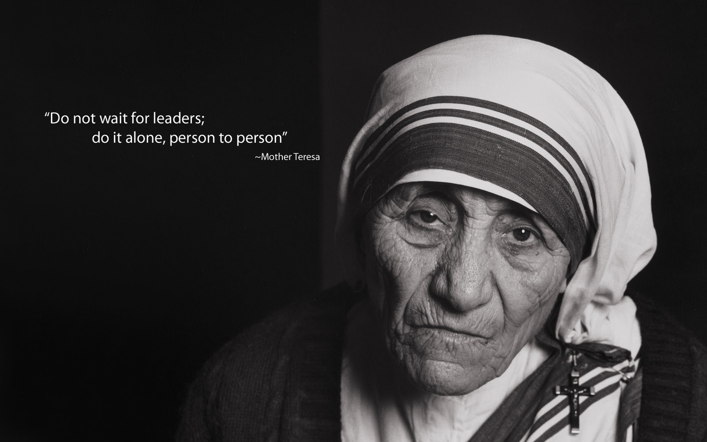

Mother Teresa: An extraordinary witness to fidelity
UNHEARD FACTS ABOUT MOTHER TERESA
Mother Teresa was immensely inspired by Mahatma Gandhi. She was deeply affected by his principles and ideology of non-violence.
During her childhood, she spent most of her time in Church. So from there, she became fascinated about the life of Missionaries.
Teresa left her home in 1928 when she was only 18 years old. After that, she never returns and metwith her family.
Mother Teresa could be able to speak five languages. These languages were Albanian, Serbian, English, Hindi, and Bengali. She believed that by only learning different languages, she could communicate and understand other's pain, and suffering.
Mother Teresa began her full-time charitable work as a Headmistress at Lorento Convent School in Kolkata. But she had an instinct that she was made for something higher.
And that was to serve needy, homeless and poor people.
Teresa was honored by the highest award in the world, Nobel Peace Prize in 1979. She lived her whole life with the poor, sick, hungry, and needy people
Mother Teresa was absolutely against contraception and abortion. Her opinion was that there was no difference between killing a human being and killing a child in the womb. Both are equally disgusting for humanity.
From 1931 to 1948, Teresa taught geography, arithmetic, and religion at St. Mary's High School in Calcutta. Later, she took over as the headmistress there.
Mother Teresa won the Nobel Peace Prize in 1979, due to her enormous and dedicated work for poor and needy people.
In 2015, Pope Francis of the Roman Catholic Church declared Mother Teresa a Saint. This is known as canonization, and it means Mother Teresa is now known as St. Teresa of Calcutta in the Catholic Church.
Mother Teresa received invitations to speak at the Vatican and the United Nations which is a once-in-a-lifetime opportunity that only a few powerful people are given.